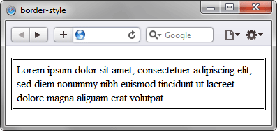

Устанавливает стиль границы вокруг элемента.
Допустимо задавать индивидуальные стили
для разных сторон элемента.
Синтаксис
border-style: [none | hidden | dotted | dashed | solid |
double | groove | ridge | inset | outset] {1,4} | inherit
Для управления видом границы предоставляется
несколько значений свойства border-style.
Вид зависит от используемого браузера и заданной
толщины границы. В таблице приведены названия
стилей и получаемая рамка при разных значениях
толщины — 1, 3, 5 и 7 пикселов.
Таблица стилей границ
| 1 пиксел | 3 пиксела | 5 пикселов | 7 пикселов |
|---|---|---|---|
dotted |
dotted |
dotted |
dotted |
dashed |
dashed |
dashed |
dashed |
solid |
solid |
solid |
solid |
double |
double |
double |
double |
groove |
groove |
groove |
groove |
ridge |
ridge |
ridge |
ridge |
inset |
inset |
inset |
inset |
outset |
outset |
outset |
outset |
Кроме перечисленных в таблице значений
используются следующие ключевые слова.
| Число значений | Результат |
|---|---|
| 1 | Стиль границы будет задан для всех сторон элемента. |
| 2 | Первое значение устанавливает стиль верхней и нижней границы, второе — левой и правой. |
| 3 | Первое значение задает стиль верхней границы, второе — одновременно левой и правой границы, а третье — нижней границы. |
| 4 | Поочередно устанавливается стиль верхней, правой, нижней и левой границы. |
Пример:
<!DOCTYPE html>
<html>
<head>
<meta charset="utf-8">
<title>border-style</title>
<style>
p {
padding: 7px;
background: #FCE9C9;
border: 4px dashed #E27D60;
}
</style>
</head>
<body>
<p>
Пример рамки со стилем dashed.
</p>
</body>
</html>
Результат применения свойства border-style:
